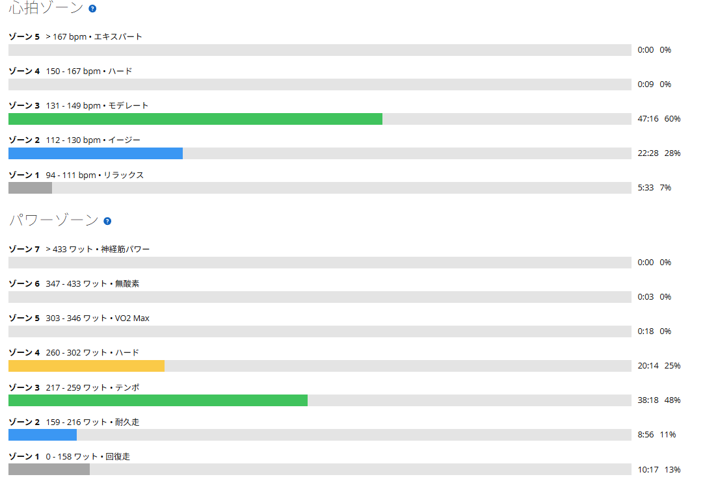

250Wで20分がきつかった私が、253Wで60分走れた日
昨日は太平山反時計回り。太平山、琴平峠、最後の唐沢山までかなり踏んで、TSSは155。走り終えたあとは全身が疲れて、背骨に沿った腰の中央あたりにも筋肉が張ったような重だるさがあった。痛みではないけれど、いかにも「仕事をしたな！！」という感覚である。
だからといって、今日を完全な休養日にするつもりはなかった。前日にAIと相談したメニューは、体調がよければSST20分×3本、微妙なら短縮、厳しければベース走というものだった。

280Wで踏みたい気分じゃなかった
ところが、ローラーに乗ってみると、どうも280Wで踏みたくない。出せないという訳ではない。ただ今日は、20分ごとに高い出力を狙う気分ではなかった。そこで方針を変えた。数字を決めず、「この強度なら60分続けられそうだ」という感覚で回してみることにした。
結果は60分、平均253W。FTP289Wの約88％である。最初から250Wを狙っていたわけではない。ワット数を合わせ込んで作った記録ではなく、走りながら決めたペースが、終わってみたら253Wだった。
約41km・NP240W・TSS89
- 全体41.00km / 1時間18分09秒 / 運動量1,080kJ
- 負荷平均230W / NP240W / IF0.831 / TSS89.4 / FTP設定289W
- 心拍・回転平均131bpm / 最大150bpm / 平均81rpm
- 構成アップ約9分（161W）→ メイン60分 → ダウン約10分（163W）
- メイン60分 / 253W / NP252W / 心拍平均137bpm・最大150bpm / 81rpm

250Wで20分がきつかった頃と比べて
253Wで60分。これは自分でも少し驚いた。記憶では、昔は250Wで20分走るだけでもきつかった。それが今日は、ほぼ同じ出力を60分。ローラーで一定出力を続けた日と並べてみると、こうなる。
| 日付 | メイン | 心拍平均 |
|---|---|---|
| 9月9日 | 40分・249W | 149bpm |
| 10月26日 | 60分・212W | 129bpm |
| 今日 | 60分・253W | 137bpm |
9月9日は249Wで40分走って、最初は楽だったのに、終わる頃には何も残っていなかった。今日は同じくらいの出力で20分長く走り、心拍の平均は12拍低い。もちろん、持続時間が伸びたから能力もそれだけ上がった、という単純な話ではない。体調も前日の練習も違う。それでも、かつての自分を知っている身としては、数字を見て「ここまで走れるようになったのか」と思った。
体感は9割。最後の5分はめちゃくちゃきつい
体感のきつさを数字にするなら9割くらい。決して余裕しゃくしゃくの60分ではなかった。特にラスト5分がめちゃくちゃきつい。「60分できそう」と思って始めたペースは、最後まで楽に維持できるペースではなかったらしい。それでも、途中で大きく落とすことなく60分を走り切れた。
それに、最初から「今日は253Wで走ろう」と決めていたら、もう少し数字に気を取られていたかもしれない。今日は設定した出力を追いかけるのではなく、自分の脚の感覚を頼りにした。これも富士ヒルのような長い登りでは必要な能力だと思う。
253Wを美化しない
AIにしては、なかなかまともなことを言っている。当初のSSTをやらなかったから失敗、ということではない。むしろ、走り出してから自分の状態に合わせて内容を変え、その結果として意味のある60分を積めた。ただし、昨日のTSS155に続いて今日は89。今日も十分な負荷だったことは忘れずにいたい。
何より、今日の253Wは「余裕を持って出せる巡航出力」ではない。最後の5分は本当にきつかった。ここを美化してしまうと、次に同じことをしたとき判断を間違える。
300Wまで、あと47W
目標はローラーで300Wを60分維持すること。今日との差は47W。まだ大きい。正直約50ｗ上げて走っている未来が想像できない。それでも、昔の「250Wで20分がきつい」という地点から、今は「253Wで60分走れた」地点に来た。この変化は、ちゃんと記録しておきたい。
SSTで20分を積み重ねる日もあれば、今日のように感覚で長く踏む日もある。富士ヒルゴールドを狙う過程で、どちらも無駄にはしたくない。明日いきなり300Wが踏めるわけではないけれど、少なくとも昔の私より、今の私はずっと長く踏める。今日はそれが一番うれしかった。